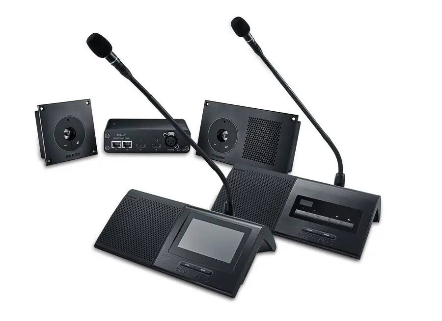

Shure MicroFlex Complete
Цифровая конференц-система Shure Microflex Complete с встроенным кодеком обеспечит передачу натурального и четкого звукового сигнала. Идентификация с помощью карт NFC позволяет участникам свободно перемещаться между местами. Благодаря гибким функциям настройки системы можно проводить встречи практически в любом формате с поддержкой мультиязычности. Система обладает широкой масштабируемостью, при которой аудитория мероприятий может достигать нескольких тысяч человек.